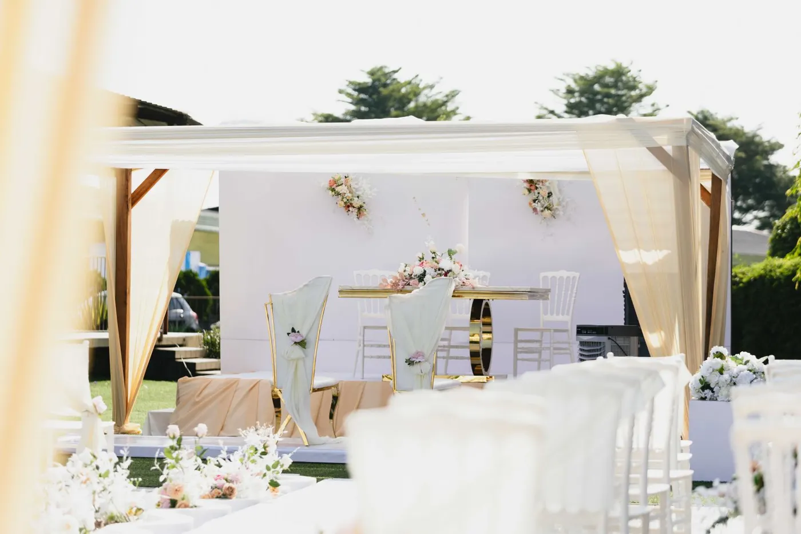

Services
Réalisations
Formules
À propos
Journal
Parlons-en
↗
Réalisations
Quelques moments
choisis
Tout
Mariage
Dot
Décoration

En vidéo
L'unique regard
sur vos événements
‹
›
Cortège
Les demoiselles d'honneur
▶
Cortège
Tout en jaune et rose
▶
Cérémonie
L'entrée des hommes en rouge
▶
Cortège
Les témoins en marron
▶
Décoration
Salle drapée et lumières
▶
Réception
L'ambiance de la soirée
▶
Décoration
Accueil et table d'honneur
▶
Coulisses
Essayage de robes de mariée
▶
Coulisses
Préparatifs de fiançailles
▶
×
×
‹
›
Votre cérémonie sera la
prochaine
Demander un devis
↗